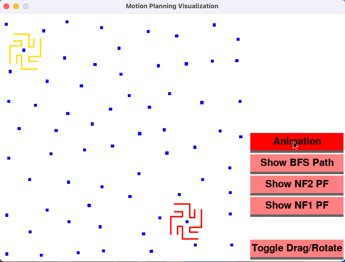
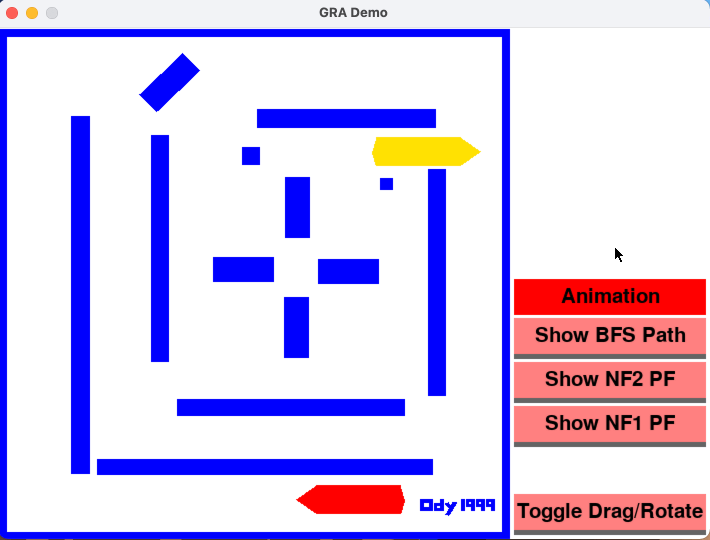
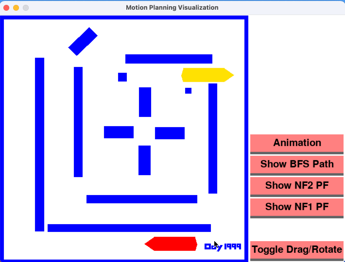
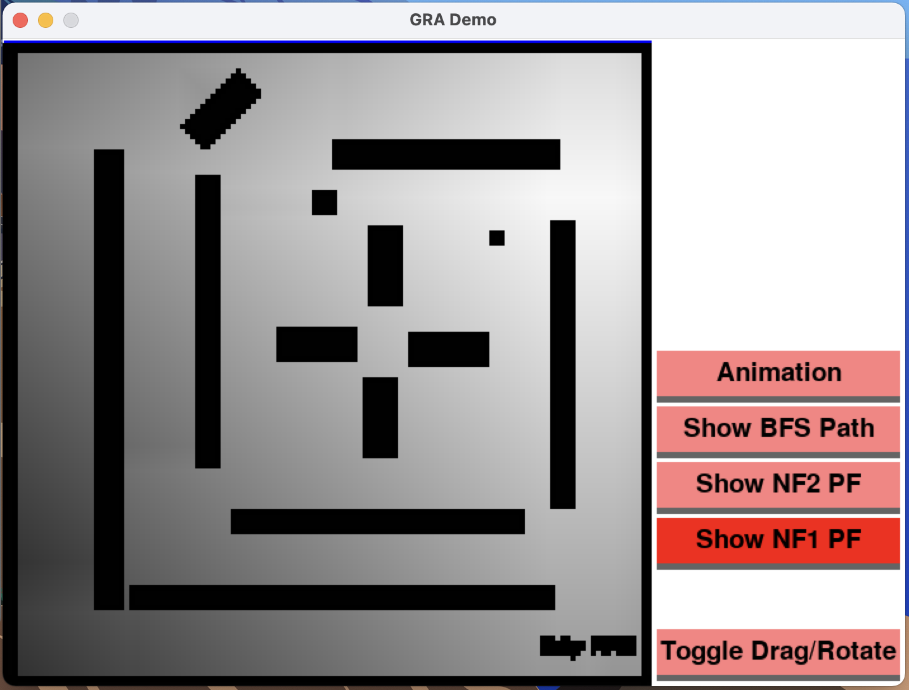
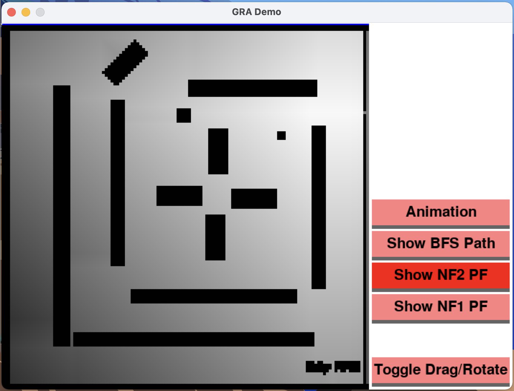
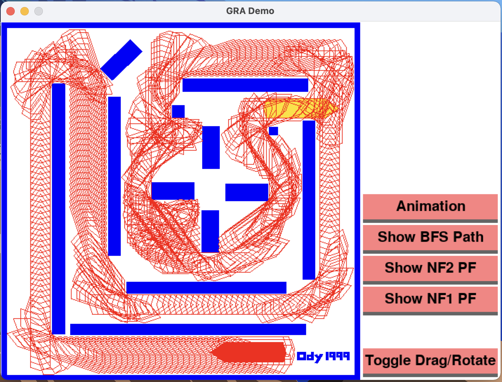

A python visualization of motion planning using potential field method and BFS
 
Obstacles and robots can be set with input files (like those in Dat), or it can also be configured using
GUI interface.

Two different ways( NF1, NF2 ) are used to calculate potential values.
 
Pathfinding using Best First Search algorithm.

Run:
$ python3 src/run.py Dat/robot.dat Dat/obstacle.dat